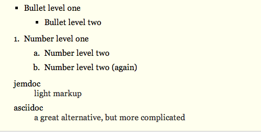
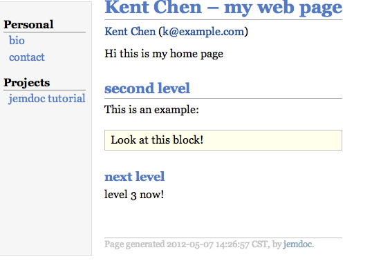
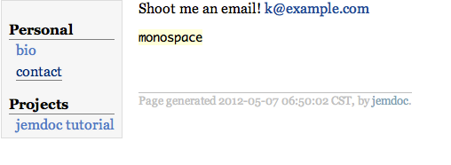
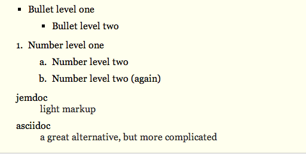
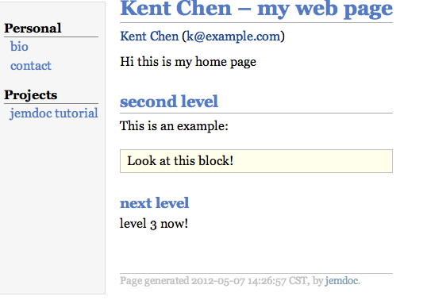
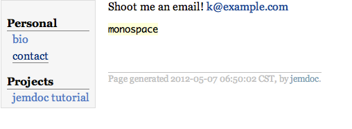

感謝您對「自由軟體鑄造場」的支持與愛護，十多年來「自由軟體鑄造場」受中央研究院支持，並在資訊科學研究所以及資訊科技創新研究中心執行，現已完成階段性的任務。 原網站預計持續維運至 2021年底，網站內容基本上不會再更動。本網站由 Denny Huang 備份封存。
也紀念我們永遠的朋友 李士傑先生（Shih-Chieh Ilya Li）。
也紀念我們永遠的朋友 李士傑先生（Shih-Chieh Ilya Li）。
什麼是資源表列?
jemdoc
Rate this listing
0 vote
繼上次介紹 nanoc 以後，筆者接續比較了多款靜態的頁面生成工具。 本次將介紹一款由 Python 實現的靜態網頁產生工具－ jemdoc。 jemdoc 是一個輕量的標記語言，專門用於表現網站的內容與排版。 jemdoc 能讀取設定檔跟選單來作更豐富的調整以符合使用者需求。 因而讓管理靜態網頁變的非常的方便跟簡易。 而相較於nanoc， jemdoc 並不是那麼的複雜，支援的功能或許也不是那麼的多，但是 jemdoc 讓學習曲線不那麼的陡峭， 它的設計非常直觀，只要適應 jemdoc 的語言跟熟悉 HTML 跟 CSS， jemdoc 並不是一個需要花很多時間學習的工具。 jemdoc 雖然很簡單，但由於有著內建支援 LaTeX 方程式表格的功能，這讓 jemdoc 的表現力大大地提升了。 jemdoc 的設計哲學就是要讓網頁生成更容易, 因此 jemdoc 產生出來的內容，可以非常輕易的發佈到伺服器上，而無需多安裝套件或煩惱相容性的問題。
本文將介紹 jemdoc 的入門知識，接續帶領讀者實作一個簡易的個人網頁 ( 就如同上次用 nanoc 實作 )，透過實例輕鬆學習使用 jemdoc 的方式，協助讀者在未來可以很輕易的使用這個工具產生編輯自己的靜態網站。
本文將介紹 jemdoc 的入門知識，接續帶領讀者實作一個簡易的個人網頁 ( 就如同上次用 nanoc 實作 )，透過實例輕鬆學習使用 jemdoc 的方式，協助讀者在未來可以很輕易的使用這個工具產生編輯自己的靜態網站。
首先，建議讀者創建一個新的資料夾來存放本次實作的相關檔案。我們的目標是創建一個個人的網頁。在實際進入實作前，我們先來介紹 jemdoc 的語法。就如同先前的 markdown，jemdoc 試著利用直觀的方式來標記使用者想要的文章格式。
jemdoc 的標記語法非常的簡單，如果想要標示斜體，可以用 `/text/`。 若是要有粗體的字，則用 `*text*`。 jemdoc 還有一個很特別的內建格式：monospace。 這種格式讓每一個字的橫軸距離都一樣。jemdoc還有一些好用的標記，以下是一個簡單的整理：
接著，我們再介紹一些標題與文章段落的標記。
在 jemdoc 中，標題跟列表有被很好的支援。標題的層級可以透過 `=` 的數量來決定。 譬如：
如上面所示，jemdoc 會分別產生三個不同層級的標題。
列表的層級也可以透過類似的方式實現，如果是簡易的列表，則是用 `-` 來表示。如果需要標示數字順序的話，則是用 `.`。此外，jemdoc 還有一個很方便的內建標記 `:` ，我們可以用此的格式來表現，例如 `
以下是綜合剛剛的幾個標記一起的實作：

最後，再介紹一個標記語法用來標記文字區塊。以下是語法的使用方式：
先前有提到 jemdoc 非常簡單，不需要額外去學習開發架構，就可以快速上手。 現在我們假設你已經有一個叫 index.jemdoc 的文檔，輸入指令：
以下是一個MENU的範例：

再來, 我們點入contact。 你應該可以看到以下的頁面：

就這樣，筆者帶領讀者做出了一個簡單的網站。
本文將介紹 jemdoc 的入門知識，接續帶領讀者實作一個簡易的個人網頁 ( 就如同上次用 nanoc 實作 )，透過實例輕鬆學習使用 jemdoc 的方式，協助讀者在未來可以很輕易的使用這個工具產生編輯自己的靜態網站。
簡介
繼上次介紹 nanoc 以後，筆者接續比較了多款靜態的頁面生成工具。 本次將介紹一款由 Python 實現的靜態網頁產生工具－ jemdoc。 jemdoc 是一個輕量的標記語言，專門用於表現網站的內容與排版。 jemdoc 能讀取設定檔跟選單來作更豐富的調整以符合使用者需求。 因而讓管理靜態網頁變的非常的方便跟簡易。 而相較於nanoc， jemdoc 並不是那麼的複雜，支援的功能或許也不是那麼的多，但是 jemdoc 讓學習曲線不那麼的陡峭， 它的設計非常直觀，只要適應 jemdoc 的語言跟熟悉 HTML 跟 CSS， jemdoc 並不是一個需要花很多時間學習的工具。 jemdoc 雖然很簡單，但由於有著內建支援 LaTeX 方程式表格的功能，這讓 jemdoc 的表現力大大地提升了。 jemdoc 的設計哲學就是要讓網頁生成更容易, 因此 jemdoc 產生出來的內容，可以非常輕易的發佈到伺服器上，而無需多安裝套件或煩惱相容性的問題。本文將介紹 jemdoc 的入門知識，接續帶領讀者實作一個簡易的個人網頁 ( 就如同上次用 nanoc 實作 )，透過實例輕鬆學習使用 jemdoc 的方式，協助讀者在未來可以很輕易的使用這個工具產生編輯自己的靜態網站。
安裝說明
以下的篇幅將說明 jemdoc 的用法跟實作。首先，建議讀者創建一個新的資料夾來存放本次實作的相關檔案。我們的目標是創建一個個人的網頁。在實際進入實作前，我們先來介紹 jemdoc 的語法。就如同先前的 markdown，jemdoc 試著利用直觀的方式來標記使用者想要的文章格式。
jemdoc 的標記語法非常的簡單，如果想要標示斜體，可以用 `/text/`。 若是要有粗體的字，則用 `*text*`。 jemdoc 還有一個很特別的內建格式：monospace。 這種格式讓每一個字的橫軸距離都一樣。jemdoc還有一些好用的標記，以下是一個簡單的整理：
| -- | 會產生兩個字元長的分節號 |
| --- | 會產生三個字元長的分節號 |
| ~ | 是一個空格 |
| ＃ | 是註解的開始 |
| '' 及 “” | 就如螢幕上顯示的被產生 |
| \n | 就像是 C 跟相關語言裡面一樣會換行 |
| $LaTeX equation$ | 在金錢符號裡輸入公式即可產生一個透過LaTeX生成的圖檔 |
接著，我們再介紹一些標題與文章段落的標記。
在 jemdoc 中，標題跟列表有被很好的支援。標題的層級可以透過 `=` 的數量來決定。 譬如：
= header1 title == header 2 title === header 3 title
如上面所示，jemdoc 會分別產生三個不同層級的標題。
列表的層級也可以透過類似的方式實現，如果是簡易的列表，則是用 `-` 來表示。如果需要標示數字順序的話，則是用 `.`。此外，jemdoc 還有一個很方便的內建標記 `:` ，我們可以用此的格式來表現，例如 `
:｛term｝ definition`以下是綜合剛剛的幾個標記一起的實作：
- Bullet level one
-- Bullet level two
. Number level one
.. Number level two
.. Number level two (again)
: light markup
: a great alternative, but more complicated
此範例產生出來的格式如下：
最後，再介紹一個標記語法用來標記文字區塊。以下是語法的使用方式：
~~~ ｛Block Title｝｛mode｝ text block section: you can type whatever you want here. ~~~其中兩個用大括弧，涵括的文字並不是一定需要的。 如果沒有提供內容，這個文字區塊就不會有標題。 而 mode 提供一些額外的樣式，但也可以直接使用預設。
實例研究
接下來此部份，將會帶讀者製作一個簡易的個人網頁，並藉此熟悉一下 jemdoc 的運作方式。先前有提到 jemdoc 非常簡單，不需要額外去學習開發架構，就可以快速上手。 現在我們假設你已經有一個叫 index.jemdoc 的文檔，輸入指令：
python jemdoc.py index.jemdoc完成後，就會有一個 index.html 的檔案被生成。 建立一個叫 index.jemdoc 的新檔案，然後加入以下內容:
# jemdoc: menu = Kent Chen -- my web page [https://example.com/ Kent Chen] ([k@example.com]) Hi this is my home page == second level This is an example: ~~~ Look at this block! ~~~ === next level level 3 now!首先介紹一下, 剛剛所沒有觸及到的部分。 jemdoc 有一種叫做 modeline 的機制， 熟悉 Vim 的朋友或許可以比較容易理解, 不過基本上這讓 jemdoc 可以很精簡的作出一些設定。 這裡 `# jemdoc: menu` 就是 modeline。 包含這行的文檔會自動處於運用 menu 的 modeline 機制。 jemdoc 會在編譯的時候查找一個叫做 MENU 的文檔並依據MENU編譯相對應的格式。 `index.html` 是指定當下的檔案。
以下是一個MENU的範例：
Personal bio [bio.html] contact [contact.html] Projects jemdoc tutorial [tutorial.html]簡單的說, 此格式就是母選單跟子選單的分類。 這讓初學 jemdoc 的新手很輕易的就能夠上手。 接下來, 我們編輯一個叫做 contact.jemdoc 的文檔，這裡的內容會連結到選單的 contact 選項 ( 編譯候選單會在左邊 )。 輸入以下的內容到文件內：
# jemdoc: menu Shoot me an email! [k@example.com] +monospace+這樣我們就很輕易地完成我們的個人網站的分頁面了。 編譯之前編輯過的檔案，然後點選 index.html。 你應該會看到以下的頁面：

再來, 我們點入contact。 你應該可以看到以下的頁面：

就這樣，筆者帶領讀者做出了一個簡單的網站。
結論
相較於nanoc, jemdoc 是款相對輕量的網頁生成工具。 然而，對於一般簡易的靜態網頁， jemdoc 的內建功能已經完全可以滿足一般需求。 jemdoc 由於簡單的架構加上直觀的標記語言， 這對需要簡易操作的使用者而言, 不失為一種選擇。參考資料
- jemdoc官方網站, https://jemdoc.jaboc.net/index.
Reviews (0)
Be the first to review this listing!
自由軟體鑄造場 製作 最佳瀏覽狀態：IE7或Firefox2.0以上 (建議使用Firefox) ‧ 解析度1024*768
E-Mail：contact@openfoundry.org Address：台北市南港區研究院路2段128號 中央研究院資訊科學研究所 . 隱私權條款. 使用條款
E-Mail：contact@openfoundry.org Address：台北市南港區研究院路2段128號 中央研究院資訊科學研究所 . 隱私權條款. 使用條款